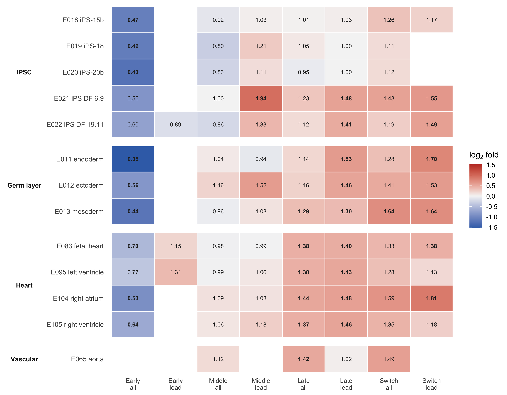
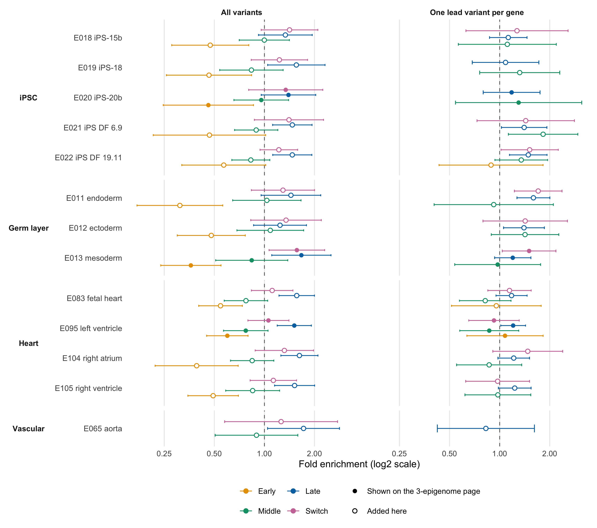
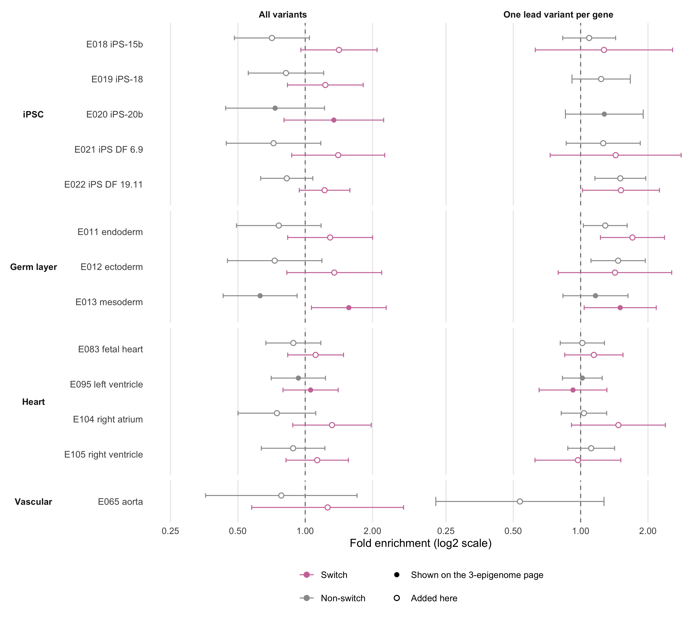
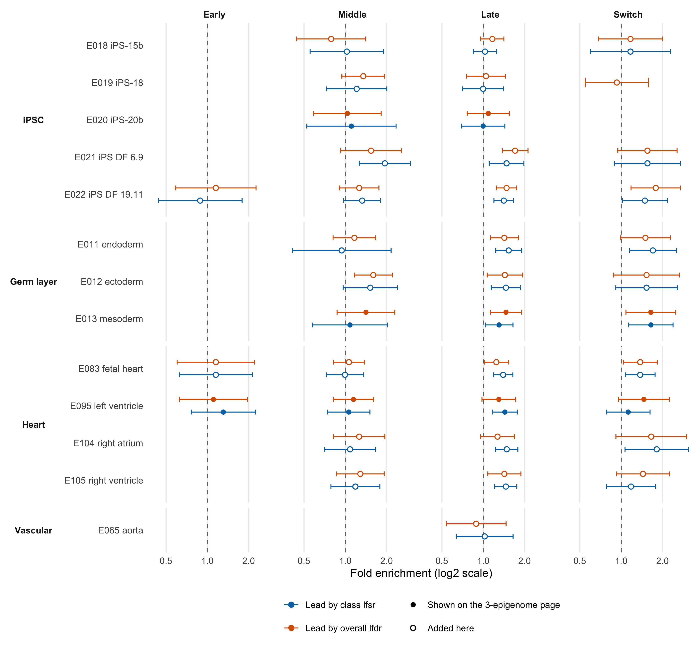
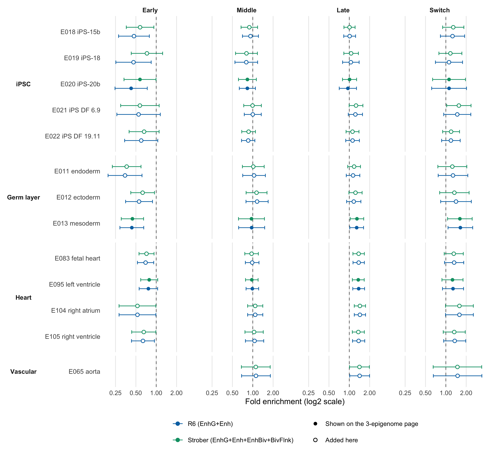

Internal analysis: FASH temporal classes across the Roadmap panel
Ziang Zhang
2026-08-26
Last updated: 2026-08-26
Checks: 6 1
Knit directory: coderepo-local/
This reproducible R Markdown analysis was created with workflowr (version 1.7.2). The Checks tab describes the reproducibility checks that were applied when the results were created. The Past versions tab lists the development history.
The R Markdown file has staged changes. To know which version of the
R Markdown file created these results, you’ll want to first commit it to
the Git repo. If you’re still working on the analysis, you can ignore
this warning. When you’re finished, you can run
wflow_publish to commit the R Markdown file and build the
HTML.
Great job! The global environment was empty. Objects defined in the global environment can affect the analysis in your R Markdown file in unknown ways. For reproduciblity it’s best to always run the code in an empty environment.
The command set.seed(20251109) was run prior to running
the code in the R Markdown file. Setting a seed ensures that any results
that rely on randomness, e.g. subsampling or permutations, are
reproducible.
Great job! Recording the operating system, R version, and package versions is critical for reproducibility.
Nice! There were no cached chunks for this analysis, so you can be confident that you successfully produced the results during this run.
Great job! Using relative paths to the files within your workflowr project makes it easier to run your code on other machines.
Great! You are using Git for version control. Tracking code development and connecting the code version to the results is critical for reproducibility.
The results in this page were generated with repository version 55cacb9. See the Past versions tab to see a history of the changes made to the R Markdown and HTML files.
Note that you need to be careful to ensure that all relevant files for
the analysis have been committed to Git prior to generating the results
(you can use wflow_publish or
wflow_git_commit). workflowr only checks the R Markdown
file, but you know if there are other scripts or data files that it
depends on. Below is the status of the Git repository when the results
were generated:
Ignored files:
Ignored: .DS_Store
Ignored: .Rhistory
Ignored: .Rproj.user/
Ignored: Rplots.pdf
Ignored: analysis/.DS_Store
Ignored: analysis/.Rhistory
Ignored: code/.DS_Store
Ignored: code/.Rhistory
Ignored: code/revision_simulations/.DS_Store
Ignored: data/appendixB/
Ignored: data/dynamic_eQTL_real/
Ignored: data/revision_simulations/
Ignored: data/toy_example/
Ignored: output/dynamic_eQTL_real/
Ignored: output/pdf/
Ignored: output/playwright/
Ignored: output/revision_simulations/
Ignored: scripts/
Untracked files:
Untracked: analysis/revision_internal_fash_knockoff.rmd
Untracked: analysis/revision_internal_fash_temporal_class_enhancer_enrichment.rmd
Untracked: analysis/revision_internal_three_likelihood_comparison.rmd
Untracked: code/03_nonlindyn_lfsr.R
Untracked: code/03_nonlindyn_lfsr.sbatch
Untracked: code/revision_simulations/internal/fash_knockoff/reporting.R
Untracked: code/revision_simulations/internal/fash_knockoff/test_reporting.R
Untracked: code/revision_simulations/internal/fash_temporal_class_enhancer_enrichment/
Untracked: code/revision_simulations/internal/per_unit_expression_correlation/
Untracked: code/revision_simulations/r1_r2_fashr0143/source_snapshots/
Untracked: code/revision_simulations/r3_r4_fashr0143/21_r3_center_aligned_relative_location_paired_core.R
Untracked: code/revision_simulations/r3_r4_fashr0143/21_r3_center_aligned_relative_location_paired_fashr0143.R
Untracked: code/revision_simulations/r3_r4_fashr0143/21_r3_center_aligned_relative_location_paired_fashr0143.sbatch
Untracked: code/revision_simulations/r3_r4_fashr0143/source_snapshots/r3_center_aligned_relative_location_paired_driver.R
Untracked: code/revision_simulations/r3_r4_fashr0143/source_snapshots/r3_center_aligned_relative_location_paired_simulation_functions.R
Untracked: code/revision_simulations/r3_r4_fashr0143/test_r3_center_aligned_relative_location_paired.R
Untracked: code/revision_simulations/r4_correlated_errors/compute_full_model_residual_correlation.R
Untracked: code/revision_simulations/r4_correlated_errors/compute_pc_residual_expression_correlation.R
Unstaged changes:
Modified: analysis/dynamic_eQTL_real.rmd
Modified: analysis/dynamic_eQTL_real_cl.rmd
Modified: analysis/dynamic_eQTL_real_full.rmd
Modified: analysis/nonlinear_dynamic_eQTL_real.Rmd
Modified: analysis/nonlinear_dynamic_eQTL_real_cl.Rmd
Modified: analysis/nonlinear_dynamic_eQTL_real_full.rmd
Modified: analysis/revision_balanced_variant_thinning.rmd
Modified: analysis/revision_combined_spiky_genotype_simulation.rmd
Modified: analysis/revision_correlated_error_simulation.rmd
Modified: analysis/revision_enhancer_enrichment.rmd
Modified: analysis/revision_genotype_level_simulation.rmd
Modified: analysis/revision_internal_temporal_class_roadmap_enrichment.rmd
Deleted: code/02_dyn.R
Modified: code/02_dyn_lfsr.R
Modified: code/02_dyn_lfsr.sbatch
Deleted: code/03_nonlindyn.R
Modified: code/revision_simulations/README.md
Modified: code/revision_simulations/internal/fash_knockoff/plot_lfdr_histograms.R
Modified: code/revision_simulations/internal/fash_knockoff/plot_w_boxplot_by_discovery.R
Modified: code/revision_simulations/internal/fash_strober_enhancer_comparison/reporting.R
Modified: code/revision_simulations/internal/temporal_class_roadmap_enrichment/reporting.R
Modified: code/revision_simulations/internal/temporal_class_roadmap_enrichment/run_temporal_class_roadmap_enrichment.R
Modified: code/revision_simulations/internal/temporal_class_roadmap_enrichment/temporal_class_roadmap_helpers.R
Modified: code/revision_simulations/internal/temporal_class_roadmap_enrichment/test_temporal_class_roadmap_helpers.R
Modified: code/revision_simulations/r1_r2_fashr0143/reporting_overlay.R
Modified: code/revision_simulations/r4_correlated_errors/reporting.R
Modified: code/revision_simulations/r4_correlated_errors/test_unit_specific_residual_permutation_helpers.R
Modified: code/revision_simulations/r4_correlated_errors/unit_specific_residual_permutation_helpers.R
Staged changes:
New: analysis/revision_internal_temporal_class_roadmap_enrichment.rmd
New: code/revision_simulations/internal/temporal_class_roadmap_enrichment/reporting.R
New: code/revision_simulations/internal/temporal_class_roadmap_enrichment/run_temporal_class_roadmap_enrichment.R
New: code/revision_simulations/internal/temporal_class_roadmap_enrichment/temporal_class_roadmap_helpers.R
New: code/revision_simulations/internal/temporal_class_roadmap_enrichment/test_reporting.R
New: code/revision_simulations/internal/temporal_class_roadmap_enrichment/test_temporal_class_roadmap_helpers.R
Note that any generated files, e.g. HTML, png, CSS, etc., are not included in this status report because it is ok for generated content to have uncommitted changes.
There are no past versions. Publish this analysis with
wflow_publish() to start tracking its development.
Question
Two internal pages already exist, and this one is their product:
- The three-epigenome temporal page splits FASH’s discoveries into early / middle / late and tests them against E020, E013 and E095.
- The thirteen-epigenome panel page widens the annotation panel, but only for whole discovery sets.
Crossing them asks the question neither can answer alone: do FASH’s temporal categories enrich differently across the wider Roadmap panel, and does the heart-enhancer signal belong to a particular category? The switch class is new here — the three-epigenome page covers only the timing windows.
Both selection strategies are shown throughout: all discovered variants, and one lead variant per gene chosen by lfsr.
Nothing is refit. Every classification comes from the cached
testing_functional() output under
output/dynamic_eQTL_real/, which the page verifies is the
current open-\((3,12)\) middle window
rather than the stale \([4,11]\)
historical estimand (see below). The discovery set is R6’s and the
estimator is enrichment_api.R unchanged.
Section 1: the four classes
The manuscript defines four functionals on the posterior of \(\beta(t)\) over the 15-day course. Three locate the peak of \(|\beta(t)|\):
\[ \text{early: } \sup_{t\le 3}|\beta(t)| - \sup_{t>3}|\beta(t)| > 0, \qquad \text{middle: } \sup_{3<t<12}|\beta(t)| - \sup_{t\le 3\ \text{or}\ t\ge 12}|\beta(t)| > 0, \] \[ \text{late: } \sup_{t\ge 12}|\beta(t)| - \sup_{t<12}|\beta(t)| > 0. \]
So \([0,3]\), \((3,12)\) and \([12,15]\) partition the time course exactly. Among the sixteen integer-valued measurement days, the open Middle interval contains days 4 through 11; inference is evaluated on the full 0.1-day grid.
The fourth asks whether the effect changes sign with appreciable magnitude on both sides:
\[ \text{switch: } \min\Big(\sup_t \beta(t)^{+},\ \sup_t \beta(t)^{-}\Big) - 0.25 > 0 . \]
Switch is not a fourth mutually exclusive class, and this page never treats it as one. The three timing windows partition “where does the peak fall”; switch asks a different question, “does the sign flip”. A pair can be both late and switch, and 981 of the 9,214 discovered pairs are switches spread across all three windows.
Timing membership is the argmax of the three window
probabilities, following the three-epigenome page. A strict
per-window call is not an option: at lfsr \(\le\) 0.05 the three windows hold 85 / 30 /
13 pairs, all at or below the 10-overlap floor an estimate needs. Switch
is the exception — it is the one class where a strict call has enough
variants, so it uses the manuscript’s own cumulative rule,
cfsr \(\le\) 0.05.
| Class | Mutually exclusive | Pairs | Variants | Genes | Leads (lfsr) | Median class lfsr |
|---|---|---|---|---|---|---|
| Early (peak on days 0-3) | yes (with the other two windows) | 1,157 | 1,157 | 140 | 140 | 0.337 |
| Middle (peak strictly inside days 3-12) | yes (with the other two windows) | 1,943 | 1,940 | 346 | 346 | 0.412 |
| Late (peak on days 12-15) | yes (with the other two windows) | 6,114 | 6,062 | 936 | 932 | 0.332 |
| Switch (sign change, |beta| >= 0.25 both sides) | no | 981 | 981 | 250 | 250 | 0.051 |
Switch against the timing windows:
| Timing window | Pairs | Also switch | Share |
|---|---|---|---|
| Early (peak on days 0-3) | 1,157 | 158 | 13.7% |
| Middle (peak strictly inside days 3-12) | 1,943 | 210 | 10.8% |
| Late (peak on days 12-15) | 6,114 | 613 | 10.0% |
| All discovered pairs | 9,214 | 981 | 10.6% |
Switch is spread almost uniformly — 13.7% of early pairs, 10.8% of middle, 10.0% of late, against 10.6% overall. It is not a disguised version of any timing window.
Verifying the middle window
The middle window is the open interval, so \([0,3]\), \((3,12)\) and \([12,15]\) partition the time course. That
matters because a closed \([4,11]\)
variant used to circulate in this repository; it selected the same
sixteen measured days but left \((3,4)\) and \((11,12)\) uncovered on the 0.1-resolution
grid the functionals are evaluated on. The two are indistinguishable
from the saved lfsr alone, so this page tests which one
produced its input rather than assuming.
Only the open window makes the three windows exhaustive, hence only it satisfies \(P(\text{early})+P(\text{middle})+P(\text{late}) = 1-\pi_0\):
- mean residual against \(1-\pi_0\): -3.9e-05
- median residual: -1.7e-06
- verdict: open (3, 12)
That is Monte Carlo noise at 3,000 posterior draws. The comparison has to be against \(1-\pi_0\) and not against \(1\): the residual against \(1\) is -0.05, centred on \(-\pi_0\) (median \(\pi_0\) = 0.036), and reading that deficit as uncovered time is exactly how a correct cache gets mistaken for a stale one.
verify_middle_definition() runs the check on every
rebuild and refuses to write a cache if it fails, so a classification
regenerated under a different window would be caught rather than
silently mixed in.
Power, before looking at any result
A 10-overlap estimate needs roughly 10 / (background rate) variants, and background enhancer rates across this panel span more than fourfold:
| Epigenome | Group | Background rate | Variants needed |
|---|---|---|---|
| E083 fetal heart | Heart | 9.31% | 108 |
| E022 iPS DF 19.11 | iPSC | 8.07% | 124 |
| E095 left ventricle | Heart | 7.11% | 141 |
| E105 right ventricle | Heart | 6.11% | 164 |
| E013 mesoderm | Germ layer | 5.35% | 187 |
| E104 right atrium | Heart | 5.07% | 198 |
| E018 iPS-15b | iPSC | 4.79% | 209 |
| E019 iPS-18 | iPSC | 4.30% | 233 |
| E012 ectoderm | Germ layer | 4.19% | 239 |
| E011 endoderm | Germ layer | 4.00% | 251 |
| E020 iPS-20b | iPSC | 3.65% | 274 |
| E021 iPS DF 6.9 | iPSC | 2.83% | 353 |
| E065 aorta | Vascular | 1.57% | 637 |
So the small lead sets — early with 140 variants and switch with 250 — cannot be estimated at the sparse end of the panel whatever the truth is. Those cells are blank in the figures and listed in Section 6. Blank means unpowered, not null.
Section 2: the four classes against the tested background
plot_classes_vs_background("R6", "lfsr")![Figure A. Enhancer enrichment for FASH's four temporal categories across thirteen Roadmap epigenomes, against all tested variants. All discovered variants on the left, one lead variant per gene (by class-specific lfsr) on the right. R6 enhancer definition (ChromHMM EnhG + Enh). Rows grouped by biology; filled circles are the three epigenomes the sister page shows. The x-axis is log2 so that depletion and enrichment are visually symmetric; the dashed line marks no enrichment. Bars are leave-one-autosome-out jackknife 95% intervals.](figure/revision_internal_temporal_class_roadmap_enrichment.rmd/figure-a-1.png)
Figure A. Enhancer enrichment for FASH’s four temporal categories across thirteen Roadmap epigenomes, against all tested variants. All discovered variants on the left, one lead variant per gene (by class-specific lfsr) on the right. R6 enhancer definition (ChromHMM EnhG + Enh). Rows grouped by biology; filled circles are the three epigenomes the sister page shows. The x-axis is log2 so that depletion and enrichment are visually symmetric; the dashed line marks no enrichment. Bars are leave-one-autosome-out jackknife 95% intervals.
The all-variants column separates the classes about as cleanly as this kind of analysis ever does.
Early is depleted, everywhere. All 1,157 early variants give 0.35-0.77-fold across the panel, with 9 of 12 estimable intervals lying entirely below 1 and not one above it. The depletion is deepest at the germ-layer and iPSC annotations (E011 0.35, E012 0.56, E013 0.44; E018 0.47, E019 0.46, E020 0.43, E021 0.55, E022 0.60) and shallowest at the cardiac ones (E083 0.70, E095 0.77, E104 0.53, E105 0.64). The three-epigenome page reported early depletion at E020 and E013; it is not specific to those two.
Middle is flat. 0.80-1.16-fold, with 0 of 13 intervals above 1 and 0 of 13 below. Middle discoveries are indistinguishable from the tested background at every annotation on the panel.
Late carries the signal, and it is the only class with a tissue gradient. iPSC 0.95-1.23-fold (0 of 5 above 1), germ layer 1.14-1.29-fold (1 of 3), cardiac 1.37-1.44-fold (4 of 4). The four cardiac epigenomes are E083 1.38, E095 1.38, E104 1.44, E105 1.37 — a tight block, every interval clear of 1.
Switch is elevated but underpowered. 1.11-1.64-fold over all 981 switch variants, every point estimate above 1, but only 1 of 13 intervals clear it — 1.64-fold (95% CI 1.08-2.50) at E013 mesoderm. With a tenth of the discoveries the intervals are roughly twice as wide as late’s.
plot_fold_heatmap("Tested background", "R6", "lfsr")
Figure A2. Fold enrichment for every class and selection strategy against the tested background, R6 enhancer definition. Bold entries have a jackknife 95% interval entirely clear of 1 in either direction. Blank cells fall below the minimum-overlap threshold. Colour is symmetric on the log2 scale.
The Early all column is uniformly blue and the
Late all / Switch columns uniformly red. That
is the whole result in one picture.
The lead-per-gene column
Leading by lfsr keeps the late-class enrichment — 9 of 13 of the panel above 1, the most of any cell on this page — but again flattens the tissue gradient: germ layer E011 1.53, E012 1.46, E013 1.30 is now as high as cardiac E083 1.40, E095 1.43, E104 1.48, E105 1.46. The same flattening under lead selection appears on the thirteen-epigenome page for the whole discovery set, so it is a property of lead selection rather than of the timing classes.
Early’s lead set is 3 of 13 estimable, so that column says nothing either way. Middle’s one clear cell is 1.94-fold (95% CI 1.26-2.98) at E021, an iPSC line, out of 12 of 13 estimable cells — a single cell in a large search space, and not something to build on.
Section 3: are the classes special among the discoveries?
Comparing a class to all tested variants conflates two things: whether FASH’s discoveries as a whole sit in enhancers, and whether this class does so more than its siblings. Restricting the comparator to the other 9,148 FASH-discovered variants isolates the second.
plot_classes_vs_discoveries("R6")
Figure B. The same four categories, now against the other FASH discoveries rather than against all tested variants. This isolates class specificity from the enhancer propensity of the discovery set as a whole. All variants on the left, lead per gene (by lfsr) on the right.
The within-discovery view is flatter across tissues and sharper across classes:
- Early is depleted relative to its siblings at 10 of 12 estimable epigenomes, over 0.31-0.60-fold.
- Middle is 0.77-1.08-fold with 0 of 13 above 1 and 0 of 13 below — genuinely indistinguishable from the rest of the discoveries.
- Late is enriched at every epigenome, 1.24-1.72-fold, with 9 of 13 intervals clear of 1 — and, crucially, with no tissue gradient at all.
A two-factor reading, which is the main thing this page
adds. The tissue gradient and the class effect come apart.
Against the tested background the late class shows iPSC < germ layer
< heart; against the other discoveries it is uniformly elevated with
no gradient. The gradient therefore belongs to the discovery set
as a whole — the thirteen-epigenome page shows exactly that
profile for current_all, cardiac 1.21–1.25 and iPSC
0.86–1.10 — while the timing class scales the overall enhancer
propensity up or down: early suppresses it, late amplifies it,
middle leaves it alone. The two effects multiply; neither is evidence
for the other.
Switch against its own complement
plot_switch_contrast("R6")
Figure B2. Switch variants against non-switch variants, both compared with the other FASH discoveries. The mirror-image behaviour is the same contrast read from either side.
Switch runs 1.06-1.57-fold and non-switch 0.63-0.93-fold — a real contrast in the expected direction, but with only 1 of 13 switch intervals clear of 1. Since switch is spread evenly across the timing windows (Section 1), this is not the late-class effect in disguise; but 981 variants is not enough to say much more than “same direction, weaker evidence”.
Section 4: the summary questions, answered
Is each class enriched, and where? Early is depleted across the whole panel (9 of 12 intervals below 1, none above). Middle is flat everywhere. Late is enriched, most strongly and most consistently at the four cardiac epigenomes (4 of 4). Switch is elevated everywhere but clears 1 at only 1 of 13 epigenome.
Does the three-epigenome page’s finding survive the wider panel? Yes, and it generalises. That page reported early depleted at E020/E013 and the R6 signal concentrated in late. Here early is depleted at 9 of 12 epigenomes spanning all four biological groups, and late is the only class carrying the cardiac block. Neither result was an artefact of the three-epigenome choice.
Is switch distinguishable from non-switch discoveries? Weakly. The direction is consistent and the mirror contrast is clean, but the intervals mostly include 1. This needs either more discoveries or a pre-registered single contrast, not more cells.
Does any class track its own developmental stage? No. The stage-matched prediction — early at iPSC enhancers, middle at mesoderm, late at heart — fails at the first step: early is depleted at iPSC enhancers rather than enriched (E018 0.47, E019 0.46, E020 0.43, E021 0.55, E022 0.60), which is the opposite of the prediction. Middle is flat at E013. Only late-at-heart holds, and Section 3 shows that even that is the discovery set’s tissue profile amplified by the late class, not a late-specific preference for cardiac enhancers.
Do the two selection strategies agree? On the class ordering, yes — late highest, middle flat, early lowest wherever it is estimable. On the tissue gradient, no: it is present in the all-variants view and absent in the lead view.
Does leading by lfsr rather than lfdr matter? More than the enhancer definition does. See Section 5.
Is any of this sensitive to the enhancer-state definition? No. See Section 5.
Section 5: the two sensitivity axes
Lead-selection rule: this one matters
The two rules pick genuinely different variants. Within a class and gene, the lfsr rule takes the variant most confidently in that class; the lfdr rule takes the variant with the strongest overall discovery evidence, which is what the three-epigenome sister page uses.
| Lead set | By lfsr | By lfdr | Shared | Jaccard |
|---|---|---|---|---|
| early_lead | 140 | 140 | 79 | 0.39 |
| middle_lead | 346 | 344 | 212 | 0.44 |
| late_lead | 932 | 932 | 545 | 0.41 |
| switch_lead | 250 | 250 | 183 | 0.58 |
| no_switch_lead | 1,106 | 1,104 | 495 | 0.29 |
They share only 29%–58% of their variants (Jaccard). Over the 38 cells estimable under both, fold enrichment correlates at 0.752, the largest single shift is 0.40-fold, and 7 cells move their point estimate across 1.
plot_lead_rule_sensitivity("R6")
Figure C. The two lead-selection rules side by side, lead sets only, against the tested background. Blue is the lfsr rule this page uses; orange is the overall-lfdr rule the three-epigenome page uses. Columns are the four classes.
That is a real dependence, and it is worth stating plainly: the lead-per-gene numbers on this page are not directly comparable with the lead-per-gene numbers on the three-epigenome page, because the two pages choose leads differently. The all-variants numbers are comparable, and are identical by construction.
Enhancer-state definition: this one does not
294 cells are estimable under both the R6 definition
(EnhG + Enh) and the Strober definition
(EnhG + Enh + EnhBiv + BivFlnk, verified from their source
on the thirteen-epigenome page). They correlate at 0.987, the largest
shift is 0.27-fold, and 10 cells cross 1.
plot_definition_sensitivity("all")
Figure D. The two ChromHMM enhancer-state definitions side by side, all-variant sets, against the tested background. Same estimator, same sets; only the state list differs.
No conclusion in Section 4 changes. The state definition is the less consequential of the two choices by a wide margin.
Section 6: cells with too few overlapping variants
| Variant set | N variants | Comparators affected | Epigenomes not estimable |
|---|---|---|---|
| early_all | 1,157 | Tested background; Other FASH discoveries | E065 |
| early_lead | 140 | Tested background; Other FASH discoveries | E011, E012, E013, E018, E019, E020, E021, E065, E104, E105 |
| middle_lead | 346 | Tested background; Other FASH discoveries | E065 |
| switch_lead | 250 | Tested background; Other FASH discoveries | E019, E020, E065 |
88 of the 676 cells in the full design (both definitions, both
comparators, both lead rules) fall below the 10-variant floor,
concentrated in early_lead (140 variants) and
switch_lead (250). Every one is a small set against a
sparse annotation, exactly as forecast in Section 1.
Section 7: full estimate tables
Against the tested background, R6 definition, lfsr leads:
| Class | Selection | ID | Roadmap name | Group | N variants | Overlap prop. | Comparator prop. | Fold | CI lower | CI upper |
|---|---|---|---|---|---|---|---|---|---|---|
| Early | all | E018 | iPS-15b Cells | iPSC | 1,157 | 0.0225 | 0.0480 | 0.469 | 0.277 | 0.791 |
| Early | all | E019 | iPS-18 Cells | iPSC | 1,157 | 0.0199 | 0.0431 | 0.461 | 0.253 | 0.843 |
| Early | all | E020 | iPS-20b Cells | iPSC | 1,157 | 0.0156 | 0.0366 | 0.425 | 0.246 | 0.737 |
| Early | all | E021 | iPS DF 6.9 Cells | iPSC | 1,157 | 0.0156 | 0.0284 | 0.549 | 0.262 | 1.150 |
| Early | all | E022 | iPS DF 19.11 Cells | iPSC | 1,157 | 0.0484 | 0.0807 | 0.600 | 0.341 | 1.055 |
| Early | all | E011 | hESC Derived CD184+ Endoderm Cultured Cells | Germ layer | 1,157 | 0.0138 | 0.0400 | 0.346 | 0.194 | 0.616 |
| Early | all | E012 | hESC Derived CD56+ Ectoderm Cultured Cells | Germ layer | 1,157 | 0.0233 | 0.0419 | 0.557 | 0.352 | 0.881 |
| Early | all | E013 | hESC Derived CD56+ Mesoderm Cultured Cells | Germ layer | 1,157 | 0.0233 | 0.0536 | 0.436 | 0.290 | 0.654 |
| Early | all | E083 | Fetal Heart | Heart | 1,157 | 0.0648 | 0.0931 | 0.696 | 0.528 | 0.919 |
| Early | all | E095 | Left Ventricle | Heart | 1,157 | 0.0545 | 0.0711 | 0.766 | 0.559 | 1.050 |
| Early | all | E104 | Right Atrium | Heart | 1,157 | 0.0268 | 0.0508 | 0.528 | 0.282 | 0.987 |
| Early | all | E105 | Right Ventricle | Heart | 1,157 | 0.0389 | 0.0611 | 0.637 | 0.431 | 0.941 |
| Early | all | E065 | Aorta | Vascular | 1,157 | 0.0052 | 0.0157 | - | - | - |
| Early | lead | E018 | iPS-15b Cells | iPSC | 140 | 0.0286 | 0.0479 | - | - | - |
| Early | lead | E019 | iPS-18 Cells | iPSC | 140 | 0.0214 | 0.0430 | - | - | - |
| Early | lead | E020 | iPS-20b Cells | iPSC | 140 | 0.0000 | 0.0365 | - | - | - |
| Early | lead | E021 | iPS DF 6.9 Cells | iPSC | 140 | 0.0143 | 0.0283 | - | - | - |
| Early | lead | E022 | iPS DF 19.11 Cells | iPSC | 140 | 0.0714 | 0.0807 | 0.886 | 0.439 | 1.787 |
| Early | lead | E011 | hESC Derived CD184+ Endoderm Cultured Cells | Germ layer | 140 | 0.0143 | 0.0400 | - | - | - |
| Early | lead | E012 | hESC Derived CD56+ Ectoderm Cultured Cells | Germ layer | 140 | 0.0071 | 0.0419 | - | - | - |
| Early | lead | E013 | hESC Derived CD56+ Mesoderm Cultured Cells | Germ layer | 140 | 0.0214 | 0.0535 | - | - | - |
| Early | lead | E083 | Fetal Heart | Heart | 140 | 0.1071 | 0.0931 | 1.151 | 0.624 | 2.123 |
| Early | lead | E095 | Left Ventricle | Heart | 140 | 0.0929 | 0.0711 | 1.307 | 0.763 | 2.239 |
| Early | lead | E104 | Right Atrium | Heart | 140 | 0.0500 | 0.0507 | - | - | - |
| Early | lead | E105 | Right Ventricle | Heart | 140 | 0.0429 | 0.0611 | - | - | - |
| Early | lead | E065 | Aorta | Vascular | 140 | 0.0071 | 0.0157 | - | - | - |
| Middle | all | E018 | iPS-15b Cells | iPSC | 1,940 | 0.0443 | 0.0479 | 0.925 | 0.704 | 1.215 |
| Middle | all | E019 | iPS-18 Cells | iPSC | 1,940 | 0.0345 | 0.0431 | 0.802 | 0.545 | 1.180 |
| Middle | all | E020 | iPS-20b Cells | iPSC | 1,940 | 0.0304 | 0.0365 | 0.832 | 0.632 | 1.095 |
| Middle | all | E021 | iPS DF 6.9 Cells | iPSC | 1,940 | 0.0284 | 0.0283 | 1.000 | 0.749 | 1.336 |
| Middle | all | E022 | iPS DF 19.11 Cells | iPSC | 1,940 | 0.0691 | 0.0807 | 0.856 | 0.682 | 1.074 |
| Middle | all | E011 | hESC Derived CD184+ Endoderm Cultured Cells | Germ layer | 1,940 | 0.0418 | 0.0400 | 1.045 | 0.710 | 1.538 |
| Middle | all | E012 | hESC Derived CD56+ Ectoderm Cultured Cells | Germ layer | 1,940 | 0.0485 | 0.0418 | 1.158 | 0.794 | 1.690 |
| Middle | all | E013 | hESC Derived CD56+ Mesoderm Cultured Cells | Germ layer | 1,940 | 0.0515 | 0.0535 | 0.963 | 0.618 | 1.501 |
| Middle | all | E083 | Fetal Heart | Heart | 1,940 | 0.0912 | 0.0931 | 0.980 | 0.777 | 1.236 |
| Middle | all | E095 | Left Ventricle | Heart | 1,940 | 0.0701 | 0.0711 | 0.986 | 0.796 | 1.223 |
| Middle | all | E104 | Right Atrium | Heart | 1,940 | 0.0552 | 0.0507 | 1.087 | 0.840 | 1.408 |
| Middle | all | E105 | Right Ventricle | Heart | 1,940 | 0.0649 | 0.0610 | 1.064 | 0.779 | 1.453 |
| Middle | all | E065 | Aorta | Vascular | 1,940 | 0.0175 | 0.0157 | 1.116 | 0.683 | 1.822 |
| Middle | lead | E018 | iPS-15b Cells | iPSC | 346 | 0.0491 | 0.0479 | 1.025 | 0.554 | 1.898 |
| Middle | lead | E019 | iPS-18 Cells | iPSC | 346 | 0.0520 | 0.0430 | 1.209 | 0.729 | 2.003 |
| Middle | lead | E020 | iPS-20b Cells | iPSC | 346 | 0.0405 | 0.0365 | 1.108 | 0.524 | 2.340 |
| Middle | lead | E021 | iPS DF 6.9 Cells | iPSC | 346 | 0.0549 | 0.0283 | 1.939 | 1.260 | 2.982 |
| Middle | lead | E022 | iPS DF 19.11 Cells | iPSC | 346 | 0.1069 | 0.0806 | 1.326 | 0.973 | 1.806 |
| Middle | lead | E011 | hESC Derived CD184+ Endoderm Cultured Cells | Germ layer | 346 | 0.0376 | 0.0400 | 0.940 | 0.411 | 2.151 |
| Middle | lead | E012 | hESC Derived CD56+ Ectoderm Cultured Cells | Germ layer | 346 | 0.0636 | 0.0418 | 1.520 | 0.963 | 2.397 |
| Middle | lead | E013 | hESC Derived CD56+ Mesoderm Cultured Cells | Germ layer | 346 | 0.0578 | 0.0535 | 1.080 | 0.576 | 2.027 |
| Middle | lead | E083 | Fetal Heart | Heart | 346 | 0.0925 | 0.0931 | 0.994 | 0.726 | 1.360 |
| Middle | lead | E095 | Left Ventricle | Heart | 346 | 0.0751 | 0.0711 | 1.057 | 0.740 | 1.510 |
| Middle | lead | E104 | Right Atrium | Heart | 346 | 0.0549 | 0.0507 | 1.082 | 0.705 | 1.662 |
| Middle | lead | E105 | Right Ventricle | Heart | 346 | 0.0723 | 0.0611 | 1.183 | 0.785 | 1.783 |
| Middle | lead | E065 | Aorta | Vascular | 346 | 0.0116 | 0.0157 | - | - | - |
| Late | all | E018 | iPS-15b Cells | iPSC | 6,062 | 0.0485 | 0.0479 | 1.012 | 0.827 | 1.238 |
| Late | all | E019 | iPS-18 Cells | iPSC | 6,062 | 0.0454 | 0.0430 | 1.054 | 0.795 | 1.398 |
| Late | all | E020 | iPS-20b Cells | iPSC | 6,062 | 0.0348 | 0.0365 | 0.952 | 0.710 | 1.278 |
| Late | all | E021 | iPS DF 6.9 Cells | iPSC | 6,062 | 0.0348 | 0.0283 | 1.231 | 0.966 | 1.567 |
| Late | all | E022 | iPS DF 19.11 Cells | iPSC | 6,062 | 0.0901 | 0.0806 | 1.118 | 0.885 | 1.411 |
| Late | all | E011 | hESC Derived CD184+ Endoderm Cultured Cells | Germ layer | 6,062 | 0.0454 | 0.0399 | 1.136 | 0.902 | 1.431 |
| Late | all | E012 | hESC Derived CD56+ Ectoderm Cultured Cells | Germ layer | 6,062 | 0.0487 | 0.0418 | 1.164 | 0.913 | 1.484 |
| Late | all | E013 | hESC Derived CD56+ Mesoderm Cultured Cells | Germ layer | 6,062 | 0.0686 | 0.0534 | 1.285 | 1.016 | 1.625 |
| Late | all | E083 | Fetal Heart | Heart | 6,062 | 0.1277 | 0.0928 | 1.376 | 1.134 | 1.670 |
| Late | all | E095 | Left Ventricle | Heart | 6,062 | 0.0975 | 0.0709 | 1.376 | 1.125 | 1.683 |
| Late | all | E104 | Right Atrium | Heart | 6,062 | 0.0726 | 0.0506 | 1.436 | 1.185 | 1.739 |
| Late | all | E105 | Right Ventricle | Heart | 6,062 | 0.0836 | 0.0609 | 1.374 | 1.116 | 1.692 |
| Late | all | E065 | Aorta | Vascular | 6,062 | 0.0223 | 0.0157 | 1.422 | 1.014 | 1.993 |
| Late | lead | E018 | iPS-15b Cells | iPSC | 932 | 0.0494 | 0.0479 | 1.030 | 0.846 | 1.254 |
| Late | lead | E019 | iPS-18 Cells | iPSC | 932 | 0.0429 | 0.0430 | 0.997 | 0.709 | 1.403 |
| Late | lead | E020 | iPS-20b Cells | iPSC | 932 | 0.0365 | 0.0365 | 0.999 | 0.694 | 1.437 |
| Late | lead | E021 | iPS DF 6.9 Cells | iPSC | 932 | 0.0418 | 0.0283 | 1.477 | 1.105 | 1.976 |
| Late | lead | E022 | iPS DF 19.11 Cells | iPSC | 932 | 0.1137 | 0.0806 | 1.411 | 1.196 | 1.664 |
| Late | lead | E011 | hESC Derived CD184+ Endoderm Cultured Cells | Germ layer | 932 | 0.0612 | 0.0399 | 1.531 | 1.232 | 1.902 |
| Late | lead | E012 | hESC Derived CD56+ Ectoderm Cultured Cells | Germ layer | 932 | 0.0612 | 0.0418 | 1.462 | 1.144 | 1.869 |
| Late | lead | E013 | hESC Derived CD56+ Mesoderm Cultured Cells | Germ layer | 932 | 0.0697 | 0.0535 | 1.304 | 1.033 | 1.645 |
| Late | lead | E083 | Fetal Heart | Heart | 932 | 0.1298 | 0.0930 | 1.396 | 1.186 | 1.643 |
| Late | lead | E095 | Left Ventricle | Heart | 932 | 0.1019 | 0.0710 | 1.435 | 1.165 | 1.767 |
| Late | lead | E104 | Right Atrium | Heart | 932 | 0.0751 | 0.0507 | 1.481 | 1.228 | 1.787 |
| Late | lead | E105 | Right Ventricle | Heart | 932 | 0.0891 | 0.0610 | 1.459 | 1.212 | 1.757 |
| Late | lead | E065 | Aorta | Vascular | 932 | 0.0161 | 0.0157 | 1.024 | 0.637 | 1.647 |
| Switch | all | E018 | iPS-15b Cells | iPSC | 981 | 0.0601 | 0.0479 | 1.255 | 0.831 | 1.896 |
| Switch | all | E019 | iPS-18 Cells | iPSC | 981 | 0.0479 | 0.0430 | 1.113 | 0.702 | 1.766 |
| Switch | all | E020 | iPS-20b Cells | iPSC | 981 | 0.0408 | 0.0365 | 1.116 | 0.617 | 2.020 |
| Switch | all | E021 | iPS DF 6.9 Cells | iPSC | 981 | 0.0418 | 0.0283 | 1.476 | 0.930 | 2.341 |
| Switch | all | E022 | iPS DF 19.11 Cells | iPSC | 981 | 0.0958 | 0.0806 | 1.188 | 0.866 | 1.631 |
| Switch | all | E011 | hESC Derived CD184+ Endoderm Cultured Cells | Germ layer | 981 | 0.0510 | 0.0400 | 1.276 | 0.770 | 2.113 |
| Switch | all | E012 | hESC Derived CD56+ Ectoderm Cultured Cells | Germ layer | 981 | 0.0591 | 0.0418 | 1.413 | 0.838 | 2.383 |
| Switch | all | E013 | hESC Derived CD56+ Mesoderm Cultured Cells | Germ layer | 981 | 0.0877 | 0.0535 | 1.640 | 1.077 | 2.496 |
| Switch | all | E083 | Fetal Heart | Heart | 981 | 0.1233 | 0.0930 | 1.326 | 0.956 | 1.839 |
| Switch | all | E095 | Left Ventricle | Heart | 981 | 0.0907 | 0.0710 | 1.277 | 0.892 | 1.829 |
| Switch | all | E104 | Right Atrium | Heart | 981 | 0.0805 | 0.0507 | 1.588 | 0.988 | 2.553 |
| Switch | all | E105 | Right Ventricle | Heart | 981 | 0.0826 | 0.0610 | 1.353 | 0.929 | 1.970 |
| Switch | all | E065 | Aorta | Vascular | 981 | 0.0234 | 0.0157 | 1.493 | 0.654 | 3.410 |
| Switch | lead | E018 | iPS-15b Cells | iPSC | 250 | 0.0560 | 0.0479 | 1.169 | 0.596 | 2.293 |
| Switch | lead | E019 | iPS-18 Cells | iPSC | 250 | 0.0280 | 0.0430 | - | - | - |
| Switch | lead | E020 | iPS-20b Cells | iPSC | 250 | 0.0360 | 0.0365 | - | - | - |
| Switch | lead | E021 | iPS DF 6.9 Cells | iPSC | 250 | 0.0440 | 0.0283 | 1.553 | 0.892 | 2.705 |
| Switch | lead | E022 | iPS DF 19.11 Cells | iPSC | 250 | 0.1200 | 0.0806 | 1.488 | 1.023 | 2.164 |
| Switch | lead | E011 | hESC Derived CD184+ Endoderm Cultured Cells | Germ layer | 250 | 0.0680 | 0.0400 | 1.702 | 1.148 | 2.524 |
| Switch | lead | E012 | hESC Derived CD56+ Ectoderm Cultured Cells | Germ layer | 250 | 0.0640 | 0.0418 | 1.529 | 0.914 | 2.560 |
| Switch | lead | E013 | hESC Derived CD56+ Mesoderm Cultured Cells | Germ layer | 250 | 0.0880 | 0.0535 | 1.645 | 1.134 | 2.385 |
| Switch | lead | E083 | Fetal Heart | Heart | 250 | 0.1280 | 0.0931 | 1.376 | 1.073 | 1.764 |
| Switch | lead | E095 | Left Ventricle | Heart | 250 | 0.0800 | 0.0711 | 1.126 | 0.781 | 1.622 |
| Switch | lead | E104 | Right Atrium | Heart | 250 | 0.0920 | 0.0507 | 1.814 | 1.067 | 3.084 |
| Switch | lead | E105 | Right Ventricle | Heart | 250 | 0.0720 | 0.0611 | 1.179 | 0.780 | 1.782 |
| Switch | lead | E065 | Aorta | Vascular | 250 | 0.0040 | 0.0157 | - | - | - |
Against the other FASH discoveries, R6 definition, lfsr leads:
| Class | Selection | ID | Roadmap name | Group | N variants | Overlap prop. | Comparator prop. | Fold | CI lower | CI upper |
|---|---|---|---|---|---|---|---|---|---|---|
| Early | all | E018 | iPS-15b Cells | iPSC | 1,157 | 0.0225 | 0.0476 | 0.473 | 0.277 | 0.805 |
| Early | all | E019 | iPS-18 Cells | iPSC | 1,157 | 0.0199 | 0.0428 | 0.464 | 0.258 | 0.837 |
| Early | all | E020 | iPS-20b Cells | iPSC | 1,157 | 0.0156 | 0.0338 | 0.460 | 0.247 | 0.860 |
| Early | all | E021 | iPS DF 6.9 Cells | iPSC | 1,157 | 0.0156 | 0.0333 | 0.467 | 0.215 | 1.017 |
| Early | all | E022 | iPS DF 19.11 Cells | iPSC | 1,157 | 0.0484 | 0.0850 | 0.570 | 0.319 | 1.018 |
| Early | all | E011 | hESC Derived CD184+ Endoderm Cultured Cells | Germ layer | 1,157 | 0.0138 | 0.0446 | 0.310 | 0.171 | 0.562 |
| Early | all | E012 | hESC Derived CD56+ Ectoderm Cultured Cells | Germ layer | 1,157 | 0.0233 | 0.0487 | 0.479 | 0.299 | 0.768 |
| Early | all | E013 | hESC Derived CD56+ Mesoderm Cultured Cells | Germ layer | 1,157 | 0.0233 | 0.0646 | 0.361 | 0.238 | 0.548 |
| Early | all | E083 | Fetal Heart | Heart | 1,157 | 0.0648 | 0.1190 | 0.545 | 0.403 | 0.737 |
| Early | all | E095 | Left Ventricle | Heart | 1,157 | 0.0545 | 0.0910 | 0.599 | 0.449 | 0.797 |
| Early | all | E104 | Right Atrium | Heart | 1,157 | 0.0268 | 0.0685 | 0.391 | 0.220 | 0.695 |
| Early | all | E105 | Right Ventricle | Heart | 1,157 | 0.0389 | 0.0791 | 0.492 | 0.347 | 0.697 |
| Early | all | E065 | Aorta | Vascular | 1,157 | 0.0052 | 0.0211 | - | - | - |
| Early | lead | E018 | iPS-15b Cells | iPSC | 140 | 0.0286 | 0.0446 | - | - | - |
| Early | lead | E019 | iPS-18 Cells | iPSC | 140 | 0.0214 | 0.0402 | - | - | - |
| Early | lead | E020 | iPS-20b Cells | iPSC | 140 | 0.0000 | 0.0320 | - | - | - |
| Early | lead | E021 | iPS DF 6.9 Cells | iPSC | 140 | 0.0143 | 0.0313 | - | - | - |
| Early | lead | E022 | iPS DF 19.11 Cells | iPSC | 140 | 0.0714 | 0.0805 | 0.887 | 0.432 | 1.823 |
| Early | lead | E011 | hESC Derived CD184+ Endoderm Cultured Cells | Germ layer | 140 | 0.0143 | 0.0411 | - | - | - |
| Early | lead | E012 | hESC Derived CD56+ Ectoderm Cultured Cells | Germ layer | 140 | 0.0071 | 0.0461 | - | - | - |
| Early | lead | E013 | hESC Derived CD56+ Mesoderm Cultured Cells | Germ layer | 140 | 0.0214 | 0.0599 | - | - | - |
| Early | lead | E083 | Fetal Heart | Heart | 140 | 0.1071 | 0.1122 | 0.955 | 0.513 | 1.775 |
| Early | lead | E095 | Left Ventricle | Heart | 140 | 0.0929 | 0.0863 | 1.077 | 0.635 | 1.824 |
| Early | lead | E104 | Right Atrium | Heart | 140 | 0.0500 | 0.0634 | - | - | - |
| Early | lead | E105 | Right Ventricle | Heart | 140 | 0.0429 | 0.0745 | - | - | - |
| Early | lead | E065 | Aorta | Vascular | 140 | 0.0071 | 0.0193 | - | - | - |
| Middle | all | E018 | iPS-15b Cells | iPSC | 1,940 | 0.0443 | 0.0444 | 0.999 | 0.706 | 1.413 |
| Middle | all | E019 | iPS-18 Cells | iPSC | 1,940 | 0.0345 | 0.0413 | 0.835 | 0.539 | 1.295 |
| Middle | all | E020 | iPS-20b Cells | iPSC | 1,940 | 0.0304 | 0.0318 | 0.957 | 0.656 | 1.398 |
| Middle | all | E021 | iPS DF 6.9 Cells | iPSC | 1,940 | 0.0284 | 0.0318 | 0.892 | 0.662 | 1.203 |
| Middle | all | E022 | iPS DF 19.11 Cells | iPSC | 1,940 | 0.0691 | 0.0834 | 0.828 | 0.637 | 1.077 |
| Middle | all | E011 | hESC Derived CD184+ Endoderm Cultured Cells | Germ layer | 1,940 | 0.0418 | 0.0404 | 1.034 | 0.644 | 1.660 |
| Middle | all | E012 | hESC Derived CD56+ Ectoderm Cultured Cells | Germ layer | 1,940 | 0.0485 | 0.0447 | 1.085 | 0.684 | 1.721 |
| Middle | all | E013 | hESC Derived CD56+ Mesoderm Cultured Cells | Germ layer | 1,940 | 0.0515 | 0.0615 | 0.839 | 0.509 | 1.381 |
| Middle | all | E083 | Fetal Heart | Heart | 1,940 | 0.0912 | 0.1178 | 0.775 | 0.573 | 1.047 |
| Middle | all | E095 | Left Ventricle | Heart | 1,940 | 0.0701 | 0.0907 | 0.773 | 0.568 | 1.051 |
| Middle | all | E104 | Right Atrium | Heart | 1,940 | 0.0552 | 0.0653 | 0.844 | 0.626 | 1.139 |
| Middle | all | E105 | Right Ventricle | Heart | 1,940 | 0.0649 | 0.0764 | 0.850 | 0.585 | 1.234 |
| Middle | all | E065 | Aorta | Vascular | 1,940 | 0.0175 | 0.0196 | 0.896 | 0.506 | 1.587 |
| Middle | lead | E018 | iPS-15b Cells | iPSC | 346 | 0.0491 | 0.0442 | 1.112 | 0.565 | 2.189 |
| Middle | lead | E019 | iPS-18 Cells | iPSC | 346 | 0.0520 | 0.0394 | 1.320 | 0.758 | 2.297 |
| Middle | lead | E020 | iPS-20b Cells | iPSC | 346 | 0.0405 | 0.0311 | 1.300 | 0.543 | 3.113 |
| Middle | lead | E021 | iPS DF 6.9 Cells | iPSC | 346 | 0.0549 | 0.0301 | 1.824 | 1.128 | 2.949 |
| Middle | lead | E022 | iPS DF 19.11 Cells | iPSC | 346 | 0.1069 | 0.0793 | 1.349 | 0.936 | 1.942 |
| Middle | lead | E011 | hESC Derived CD184+ Endoderm Cultured Cells | Germ layer | 346 | 0.0376 | 0.0408 | 0.921 | 0.404 | 2.102 |
| Middle | lead | E012 | hESC Derived CD56+ Ectoderm Cultured Cells | Germ layer | 346 | 0.0636 | 0.0448 | 1.420 | 0.890 | 2.266 |
| Middle | lead | E013 | hESC Derived CD56+ Mesoderm Cultured Cells | Germ layer | 346 | 0.0578 | 0.0594 | 0.973 | 0.537 | 1.762 |
| Middle | lead | E083 | Fetal Heart | Heart | 346 | 0.0925 | 0.1129 | 0.819 | 0.573 | 1.170 |
| Middle | lead | E095 | Left Ventricle | Heart | 346 | 0.0751 | 0.0868 | 0.866 | 0.576 | 1.302 |
| Middle | lead | E104 | Right Atrium | Heart | 346 | 0.0549 | 0.0635 | 0.865 | 0.551 | 1.357 |
| Middle | lead | E105 | Right Ventricle | Heart | 346 | 0.0723 | 0.0741 | 0.975 | 0.618 | 1.538 |
| Middle | lead | E065 | Aorta | Vascular | 346 | 0.0116 | 0.0194 | - | - | - |
| Late | all | E018 | iPS-15b Cells | iPSC | 6,062 | 0.0485 | 0.0363 | 1.336 | 0.922 | 1.938 |
| Late | all | E019 | iPS-18 Cells | iPSC | 6,062 | 0.0454 | 0.0292 | 1.556 | 1.046 | 2.313 |
| Late | all | E020 | iPS-20b Cells | iPSC | 6,062 | 0.0348 | 0.0250 | 1.395 | 0.957 | 2.034 |
| Late | all | E021 | iPS DF 6.9 Cells | iPSC | 6,062 | 0.0348 | 0.0237 | 1.471 | 1.120 | 1.932 |
| Late | all | E022 | iPS DF 19.11 Cells | iPSC | 6,062 | 0.0901 | 0.0612 | 1.471 | 1.122 | 1.927 |
| Late | all | E011 | hESC Derived CD184+ Endoderm Cultured Cells | Germ layer | 6,062 | 0.0454 | 0.0314 | 1.443 | 0.955 | 2.181 |
| Late | all | E012 | hESC Derived CD56+ Ectoderm Cultured Cells | Germ layer | 6,062 | 0.0487 | 0.0392 | 1.241 | 0.861 | 1.789 |
| Late | all | E013 | hESC Derived CD56+ Mesoderm Cultured Cells | Germ layer | 6,062 | 0.0686 | 0.0412 | 1.668 | 1.107 | 2.512 |
| Late | all | E083 | Fetal Heart | Heart | 6,062 | 0.1277 | 0.0817 | 1.564 | 1.223 | 1.998 |
| Late | all | E095 | Left Ventricle | Heart | 6,062 | 0.0975 | 0.0645 | 1.512 | 1.194 | 1.915 |
| Late | all | E104 | Right Atrium | Heart | 6,062 | 0.0726 | 0.0447 | 1.623 | 1.256 | 2.098 |
| Late | all | E105 | Right Ventricle | Heart | 6,062 | 0.0836 | 0.0551 | 1.518 | 1.151 | 2.003 |
| Late | all | E065 | Aorta | Vascular | 6,062 | 0.0223 | 0.0130 | 1.718 | 1.045 | 2.825 |
| Late | lead | E018 | iPS-15b Cells | iPSC | 932 | 0.0494 | 0.0438 | 1.126 | 0.869 | 1.460 |
| Late | lead | E019 | iPS-18 Cells | iPSC | 932 | 0.0429 | 0.0396 | 1.085 | 0.684 | 1.720 |
| Late | lead | E020 | iPS-20b Cells | iPSC | 932 | 0.0365 | 0.0309 | 1.180 | 0.796 | 1.749 |
| Late | lead | E021 | iPS DF 6.9 Cells | iPSC | 932 | 0.0418 | 0.0298 | 1.403 | 1.024 | 1.923 |
| Late | lead | E022 | iPS DF 19.11 Cells | iPSC | 932 | 0.1137 | 0.0766 | 1.486 | 1.146 | 1.926 |
| Late | lead | E011 | hESC Derived CD184+ Endoderm Cultured Cells | Germ layer | 932 | 0.0612 | 0.0383 | 1.595 | 1.270 | 2.003 |
| Late | lead | E012 | hESC Derived CD56+ Ectoderm Cultured Cells | Germ layer | 932 | 0.0612 | 0.0437 | 1.400 | 1.055 | 1.857 |
| Late | lead | E013 | hESC Derived CD56+ Mesoderm Cultured Cells | Germ layer | 932 | 0.0697 | 0.0582 | 1.199 | 0.933 | 1.541 |
| Late | lead | E083 | Fetal Heart | Heart | 932 | 0.1298 | 0.1102 | 1.179 | 0.950 | 1.462 |
| Late | lead | E095 | Left Ventricle | Heart | 932 | 0.1019 | 0.0846 | 1.205 | 1.015 | 1.430 |
| Late | lead | E104 | Right Atrium | Heart | 932 | 0.0751 | 0.0618 | 1.215 | 0.976 | 1.512 |
| Late | lead | E105 | Right Ventricle | Heart | 932 | 0.0891 | 0.0723 | 1.232 | 0.982 | 1.545 |
| Late | lead | E065 | Aorta | Vascular | 932 | 0.0161 | 0.0195 | 0.826 | 0.422 | 1.618 |
| Switch | all | E018 | iPS-15b Cells | iPSC | 981 | 0.0601 | 0.0425 | 1.416 | 0.956 | 2.095 |
| Switch | all | E019 | iPS-18 Cells | iPSC | 981 | 0.0479 | 0.0389 | 1.230 | 0.833 | 1.817 |
| Switch | all | E020 | iPS-20b Cells | iPSC | 981 | 0.0408 | 0.0304 | 1.343 | 0.804 | 2.242 |
| Switch | all | E021 | iPS DF 6.9 Cells | iPSC | 981 | 0.0418 | 0.0298 | 1.405 | 0.870 | 2.267 |
| Switch | all | E022 | iPS DF 19.11 Cells | iPSC | 981 | 0.0958 | 0.0785 | 1.221 | 0.941 | 1.584 |
| Switch | all | E011 | hESC Derived CD184+ Endoderm Cultured Cells | Germ layer | 981 | 0.0510 | 0.0394 | 1.293 | 0.835 | 2.001 |
| Switch | all | E012 | hESC Derived CD56+ Ectoderm Cultured Cells | Germ layer | 981 | 0.0591 | 0.0438 | 1.349 | 0.828 | 2.198 |
| Switch | all | E013 | hESC Derived CD56+ Mesoderm Cultured Cells | Germ layer | 981 | 0.0877 | 0.0560 | 1.567 | 1.067 | 2.301 |
| Switch | all | E083 | Fetal Heart | Heart | 981 | 0.1233 | 0.1108 | 1.113 | 0.835 | 1.483 |
| Switch | all | E095 | Left Ventricle | Heart | 981 | 0.0907 | 0.0858 | 1.057 | 0.796 | 1.404 |
| Switch | all | E104 | Right Atrium | Heart | 981 | 0.0805 | 0.0611 | 1.318 | 0.880 | 1.974 |
| Switch | all | E105 | Right Ventricle | Heart | 981 | 0.0826 | 0.0730 | 1.131 | 0.821 | 1.560 |
| Switch | all | E065 | Aorta | Vascular | 981 | 0.0234 | 0.0186 | 1.260 | 0.577 | 2.752 |
| Switch | lead | E018 | iPS-15b Cells | iPSC | 250 | 0.0560 | 0.0441 | 1.271 | 0.627 | 2.577 |
| Switch | lead | E019 | iPS-18 Cells | iPSC | 250 | 0.0280 | 0.0402 | - | - | - |
| Switch | lead | E020 | iPS-20b Cells | iPSC | 250 | 0.0360 | 0.0314 | - | - | - |
| Switch | lead | E021 | iPS DF 6.9 Cells | iPSC | 250 | 0.0440 | 0.0307 | 1.434 | 0.731 | 2.813 |
| Switch | lead | E022 | iPS DF 19.11 Cells | iPSC | 250 | 0.1200 | 0.0792 | 1.515 | 1.019 | 2.250 |
| Switch | lead | E011 | hESC Derived CD184+ Endoderm Cultured Cells | Germ layer | 250 | 0.0680 | 0.0399 | 1.704 | 1.226 | 2.370 |
| Switch | lead | E012 | hESC Derived CD56+ Ectoderm Cultured Cells | Germ layer | 250 | 0.0640 | 0.0450 | 1.424 | 0.794 | 2.553 |
| Switch | lead | E013 | hESC Derived CD56+ Mesoderm Cultured Cells | Germ layer | 250 | 0.0880 | 0.0586 | 1.503 | 1.037 | 2.178 |
| Switch | lead | E083 | Fetal Heart | Heart | 250 | 0.1280 | 0.1117 | 1.146 | 0.849 | 1.546 |
| Switch | lead | E095 | Left Ventricle | Heart | 250 | 0.0800 | 0.0865 | 0.924 | 0.652 | 1.311 |
| Switch | lead | E104 | Right Atrium | Heart | 250 | 0.0920 | 0.0624 | 1.475 | 0.910 | 2.392 |
| Switch | lead | E105 | Right Ventricle | Heart | 250 | 0.0720 | 0.0741 | 0.972 | 0.625 | 1.512 |
| Switch | lead | E065 | Aorta | Vascular | 250 | 0.0040 | 0.0196 | - | - | - |
| Non-switch | all | E018 | iPS-15b Cells | iPSC | 8,180 | 0.0425 | 0.0599 | 0.710 | 0.483 | 1.045 |
| Non-switch | all | E019 | iPS-18 Cells | iPSC | 8,180 | 0.0390 | 0.0475 | 0.821 | 0.557 | 1.210 |
| Non-switch | all | E020 | iPS-20b Cells | iPSC | 8,180 | 0.0303 | 0.0413 | 0.734 | 0.441 | 1.220 |
| Non-switch | all | E021 | iPS DF 6.9 Cells | iPSC | 8,180 | 0.0298 | 0.0413 | 0.722 | 0.444 | 1.174 |
| Non-switch | all | E022 | iPS DF 19.11 Cells | iPSC | 8,180 | 0.0786 | 0.0950 | 0.827 | 0.632 | 1.082 |
| Non-switch | all | E011 | hESC Derived CD184+ Endoderm Cultured Cells | Germ layer | 8,180 | 0.0394 | 0.0517 | 0.762 | 0.493 | 1.178 |
| Non-switch | all | E012 | hESC Derived CD56+ Ectoderm Cultured Cells | Germ layer | 8,180 | 0.0438 | 0.0599 | 0.730 | 0.449 | 1.188 |
| Non-switch | all | E013 | hESC Derived CD56+ Mesoderm Cultured Cells | Germ layer | 8,180 | 0.0559 | 0.0888 | 0.629 | 0.430 | 0.920 |
| Non-switch | all | E083 | Fetal Heart | Heart | 8,180 | 0.1106 | 0.1250 | 0.885 | 0.667 | 1.175 |
| Non-switch | all | E095 | Left Ventricle | Heart | 8,180 | 0.0857 | 0.0919 | 0.932 | 0.705 | 1.232 |
| Non-switch | all | E104 | Right Atrium | Heart | 8,180 | 0.0610 | 0.0816 | 0.747 | 0.501 | 1.115 |
| Non-switch | all | E105 | Right Ventricle | Heart | 8,180 | 0.0730 | 0.0826 | 0.883 | 0.637 | 1.225 |
| Non-switch | all | E065 | Aorta | Vascular | 8,180 | 0.0186 | 0.0238 | 0.782 | 0.359 | 1.705 |
| Non-switch | lead | E018 | iPS-15b Cells | iPSC | 1,106 | 0.0479 | 0.0439 | 1.092 | 0.831 | 1.434 |
| Non-switch | lead | E019 | iPS-18 Cells | iPSC | 1,106 | 0.0479 | 0.0388 | 1.235 | 0.915 | 1.668 |
| Non-switch | lead | E020 | iPS-20b Cells | iPSC | 1,106 | 0.0389 | 0.0305 | 1.276 | 0.855 | 1.904 |
| Non-switch | lead | E021 | iPS DF 6.9 Cells | iPSC | 1,106 | 0.0380 | 0.0301 | 1.262 | 0.862 | 1.848 |
| Non-switch | lead | E022 | iPS DF 19.11 Cells | iPSC | 1,106 | 0.1139 | 0.0757 | 1.504 | 1.158 | 1.954 |
| Non-switch | lead | E011 | hESC Derived CD184+ Endoderm Cultured Cells | Germ layer | 1,106 | 0.0506 | 0.0393 | 1.289 | 1.029 | 1.614 |
| Non-switch | lead | E012 | hESC Derived CD56+ Ectoderm Cultured Cells | Germ layer | 1,106 | 0.0633 | 0.0430 | 1.471 | 1.112 | 1.946 |
| Non-switch | lead | E013 | hESC Derived CD56+ Mesoderm Cultured Cells | Germ layer | 1,106 | 0.0678 | 0.0582 | 1.165 | 0.834 | 1.628 |
| Non-switch | lead | E083 | Fetal Heart | Heart | 1,106 | 0.1139 | 0.1119 | 1.018 | 0.811 | 1.278 |
| Non-switch | lead | E095 | Left Ventricle | Heart | 1,106 | 0.0877 | 0.0862 | 1.018 | 0.829 | 1.249 |
| Non-switch | lead | E104 | Right Atrium | Heart | 1,106 | 0.0651 | 0.0629 | 1.035 | 0.819 | 1.307 |
| Non-switch | lead | E105 | Right Ventricle | Heart | 1,106 | 0.0814 | 0.0730 | 1.115 | 0.876 | 1.418 |
| Non-switch | lead | E065 | Aorta | Vascular | 1,106 | 0.0108 | 0.0203 | 0.535 | 0.225 | 1.272 |
Methods
Classifications. The four cached
testing_functional() results under
output/dynamic_eQTL_real/, computed on the BF-updated
FASH-IWP1 fit over the 9,214 discovered gene-variant pairs. The middle
window is the open \((3,12)\) one,
verified rather than assumed and reproducible from the provenance-safe
code/02_dyn_lfsr.R entrypoint. lfsr is the
posterior probability that the class functional is \(\le 0\); cfsr is its
cumulative counterpart. Nothing is refit here.
Class membership. Timing: argmax over the three
window probabilities \(1 -
\text{lfsr}\). The three windows partition the time course, so
exactly one of the three functionals is positive whenever the pair has
an effect at all. The functional is exactly \(0\) under the null (\(\beta(t)\equiv 0\) gives \(0-0\)) and
lfsr_cal = mean(x <= 0) counts that against membership,
so
\[P(\text{early}) + P(\text{middle}) + P(\text{late}) = 1 - \pi_0,\]
with \(\pi_0\) the posterior null
probability (median 0.036 over the discovered pairs). The residual is
that null mass, not uncovered time. Switch: cfsr \(\le\) 0.05, independent of timing.
Lead selection. Within a class, for each gene the variant with the smallest class-specific lfsr (primary) or the smallest overall cumulative lfdr (sensitivity). A gene whose variants split across classes contributes one lead to each class it appears in.
Annotation. The thirteen-epigenome, two-definition indicator table built by the thirteen-epigenome experiment, reused as-is. Nothing is re-downloaded or re-intersected.
Comparators. Tested background: all 745,867
tested autosomal variants. Other FASH discoveries: the same
table restricted to the 9,148 discovered variants. In both cases the set
under test is excluded from its own comparator, so
Comparator prop. varies slightly by row.
Estimator. Fold enrichment as a ratio of overlap
proportions, with leave-one-autosome-out jackknife 95% intervals over 22
blocks, minimum overlap 10, no matched controls.
enrichment_api.R is used unmodified.
No formal tests. No estimate here is compared with another by a hypothesis test. The API’s nominal p-values are in the output CSV, uncorrected and not displayed.
Consistency with the sister pages. The union of the
three timing classes is the whole R6 discovery set, so pooling them must
reproduce the thirteen-epigenome page’s current_all
estimates. The run script checks this and refuses to write a cache
otherwise: 26 annotations, maximum absolute difference 4.88e-15. The
timing counts also match the three-epigenome page exactly (early 1,157 /
middle 1,943 / late 6,114 pairs).
Reproducibility
Rscript --vanilla \
code/revision_simulations/internal/temporal_class_roadmap_enrichment/run_temporal_class_roadmap_enrichment.RRuns in about 1.5 minutes and writes only its own output directory. It requires three caches it never modifies:
output/dynamic_eQTL_real/classify_dyn_eQTLs_{early,middle,late,switch}.RData(currently the open-\((3,12)\) middle window; reproducible fromcode/02_dyn_lfsr.R);output/.../fash_strober_enhancer_comparison_fashr0143/discovery_pair_tables.rds(from the R6 experiment);output/.../roadmap_enhancer_exploration/roadmap_enhancer_annotation_matrix.rds(from the thirteen-epigenome experiment).
Tests:
Rscript --vanilla \
code/revision_simulations/internal/temporal_class_roadmap_enrichment/test_temporal_class_roadmap_helpers.R
Rscript --vanilla \
code/revision_simulations/internal/temporal_class_roadmap_enrichment/test_reporting.RRebuild this page:
Rscript --vanilla -e \
'workflowr::wflow_build("analysis/revision_internal_temporal_class_roadmap_enrichment.rmd", local = TRUE)'Substituting your own class definition needs no new code — the API takes any named list of variant vectors:
source(
"code/revision_simulations/internal/fash_strober_enhancer_comparison/enrichment_api.R"
)
source(paste0(
"code/revision_simulations/internal/temporal_class_roadmap_enrichment/",
"temporal_class_roadmap_helpers.R"
))
classifications <- load_all_classifications()
pairs <- readRDS(paste0(
"output/revision_simulations/internal/",
"fash_strober_enhancer_comparison_fashr0143/discovery_pair_tables.rds"
))$current_all
membership <- build_class_membership(pairs, classifications)
# A stricter switch call, say, and lead by class lfsr.
strict <- build_class_variant_sets(
build_class_membership(pairs, classifications, switch_alpha = 0.01),
lead_rule = "lfsr"
)
annotations <- readRDS(file.path(
roadmap_output_directory(), "roadmap_enhancer_annotation_matrix.rds"
))
compute_enrichment(
strict["switch_all"], load_background(), annotations,
controls = "background"
)Output CSVs under
output/revision_simulations/internal/temporal_class_roadmap_enrichment/:
enrichment_results.csv, set_sizes.csv,
lead_rule_agreement.csv,
estimability_forecast.csv,
pooled_timing_crosscheck.csv,
not_estimable_cells.csv, analysis_cache.rds.
Not tracked in git.
Built 2026-08-26 05:45:23 UTC with R version 4.5.1 (2025-06-13).
References
Roadmap Epigenomics Consortium, Kundaje, A., Meuleman, W., Ernst, J., Bilenky, M., Yen, A., et al. (2015). Integrative analysis of 111 reference human epigenomes. Nature 518, 317–330. https://doi.org/10.1038/nature14248
Strober, B. J., Elorbany, R., Rhodes, K., Krishnan, N., Tayeb, K., Battle, A., Gilad, Y. (2019). Dynamic genetic regulation of gene expression during cellular differentiation. Science 364, 1287–1290. https://doi.org/10.1126/science.aaw0040
sessionInfo()R version 4.5.1 (2025-06-13)
Platform: aarch64-apple-darwin20
Running under: macOS Sequoia 15.6.1
Matrix products: default
BLAS: /System/Library/Frameworks/Accelerate.framework/Versions/A/Frameworks/vecLib.framework/Versions/A/libBLAS.dylib
LAPACK: /Library/Frameworks/R.framework/Versions/4.5-arm64/Resources/lib/libRlapack.dylib; LAPACK version 3.12.1
locale:
[1] en_CA/en_CA/en_CA/C/en_CA/en_CA
time zone: America/Chicago
tzcode source: internal
attached base packages:
[1] stats graphics grDevices utils datasets methods base
loaded via a namespace (and not attached):
[1] gtable_0.3.6 jsonlite_2.0.0 dplyr_1.1.4 compiler_4.5.1
[5] promises_1.5.0 tidyselect_1.2.1 Rcpp_1.1.1-1.1 stringr_1.6.0
[9] git2r_0.36.2 dichromat_2.0-0.1 later_1.4.4 jquerylib_0.1.4
[13] scales_1.4.0 yaml_2.3.12 fastmap_1.2.0 ggplot2_4.0.3
[17] R6_2.6.1 labeling_0.4.3 generics_0.1.4 workflowr_1.7.2
[21] knitr_1.50 tibble_3.3.0 rprojroot_2.1.1 bslib_0.9.0
[25] pillar_1.11.1 RColorBrewer_1.1-3 rlang_1.2.0 cachem_1.1.0
[29] stringi_1.8.9 httpuv_1.6.16 xfun_0.55 S7_0.2.2
[33] fs_1.6.6 sass_0.4.10 otel_0.2.0 cli_3.6.6
[37] withr_3.0.3 magrittr_2.0.5 digest_0.6.39 grid_4.5.1
[41] rstudioapi_0.17.1 lifecycle_1.0.5 vctrs_0.7.3 evaluate_1.0.5
[45] glue_1.8.1 farver_2.1.2 rmarkdown_2.30 tools_4.5.1
[49] pkgconfig_2.0.3 htmltools_0.5.9